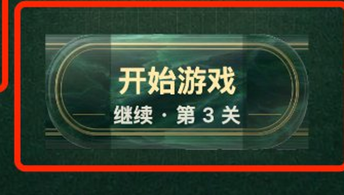
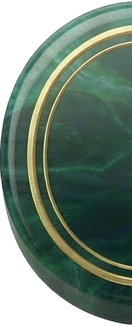
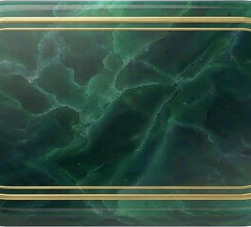
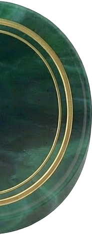
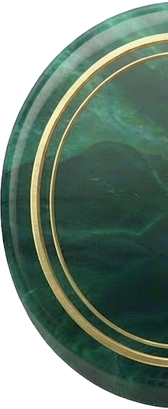
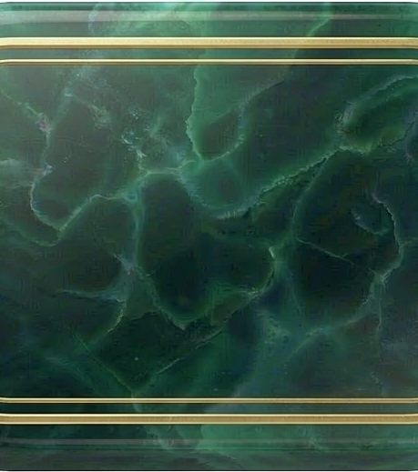
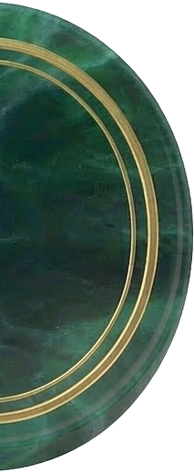
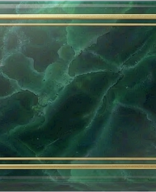
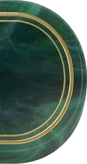

第 37 轮 · 首页主按钮换素材 · 3 款式对比
《麻麻大消除》· 微信小游戏 · 750×1334 设计值 ·
用户反馈：中间亮度提高 / 四周边缘违和 · 待拍板
先给结论
病灶不在素材，在"九宫格怎么拼"。
当前引擎把
下面三款都按正确九宫格渲染（本轮已把 v1/v2 实测弧宽切好），你挑一款即可。
btn9_mid 的 228×280 强制拉成 320×140 ——
横向 ×1.40、纵向 ×0.50，各向异性 2.81×，玉纹被压扁拉长；
再叠一层 rgba(255,255,255,.10) 的中央白渐变，
就成了你圈出来的"中间发亮"；两端 78/75 宽的帽又盖在中段上，
接缝落进可见区 ⇒ "边缘违和"。
而原设计稿 v2 写的是「两端圆角固定、中段水平拉伸」——
引擎里没照这个做。下面三款都按正确九宫格渲染（本轮已把 v1/v2 实测弧宽切好），你挑一款即可。
一、现状解剖你的实拍 2× 放大

- 中段被强制非等比拉伸
源图 228×280 → 显示 320×140：横向 ×1.403、纵向 ×0.500。 玉纹本来是一团一团云雾，被压成横向拉丝 ⇒ 中间看着"平、假、发亮"。 - 中央白渐变叠加
fillVGradient(..., 'rgba(255,255,255,0.10)', ...)铺在中段上方， 再叠rgba(0,20,10,0.16)压底 —— 中段整体比两端亮一档。 - 两端的帽与中段接不上
左帽 78 宽、右帽 75 宽（按高 140 等比），都压在中段之上； 帽的金框是圆弧、中段的金线是直线，落在 x≈78 / 245 处形成硬接缝。 两端另有 80 宽rgba(2,24,13,.34)压暗带 ⇒ 那两条"灰条"。
二、三款候选全部按正确九宫格渲染 · 真实毡面 + 真实文案
方案 B
v2 底板（设计稿 v2 选定的那块）
设计稿推荐



开始游戏继续 · 第 3 关
切切
开始游戏继续 · 第 3 关
- 素材 890×467（1.91:1）
- 左右弧宽实测 189 / 184
- 显示 320×140（2.29:1）
- 中段横向拉伸 1.34×（纵向 1:1）
这是 assets/_src/home/btn_primary_v2.png。设计稿 v2 的正文原话就是「采用游戏 UI 标准的九宫格工艺（两端圆角固定、中段水平拉伸——金线横平竖直、玉纹云雾状，拉伸无损）」。拉伸量最小、玉纹保留最完整。
方案 A
v1 底板（最早的存档版）



开始游戏继续 · 第 3 关
切切
开始游戏继续 · 第 3 关
- 素材 885×519（1.71:1）
- 左右弧宽实测 213 / 213
- 显示 320×140（2.29:1）
- 中段横向拉伸 1.66×（纵向 1:1）
这是 assets/_src/home/btn_primary.png。形体更"胖"一些、玉纹更浓，但因为素材比 320×140 更接近方形，中段要拉伸 1.66× —— 玉纹会被横向拉长的程度比 v2 明显。设计稿当初正是因此重出了 v2。
方案 C
当前在用的 btn9 三段拼接（现状，供对照）



开始游戏继续 · 第 3 关
开始游戏继续 · 第 3 关
- 中段素材 228×280
- 左帽 156×280 → 78×140
- 右帽 150×280 → 75×140
- 中段 横向 1.40× / 纵向 0.50×
这就是你截图里看到的效果 —— 与上面「现状解剖」同一处病灶。放在这里是为了让你能并排对比：同样的文案与毡面，换成正确九宫格后差别有多大。
三、数据对比同一显示尺寸 320×140 下的几何
| 项 | 方案 A · v1 底板 | 方案 B · v2 底板 | 方案 C · 现状 btn9 |
|---|---|---|---|
| 素材文件 | btn_primary.png | btn_primary_v2.png | btn9_left/mid/right.png |
| 素材尺寸 | 885×519 | 890×467 | 156 / 228 / 150 ×280 |
| 素材比例 | 1.71:1 | 1.91:1 | —（三段拼） |
| 左右弧宽（实测） | 213 / 213 | 189 / 184 | 108 / 107 |
| 中段横向拉伸 | 1.66× | 1.34× | 1.40× |
| 中段纵向拉伸 | 1.00× | 1.00× | 0.50× |
| 各向异性（横÷纵） | 1.66× | 1.34× | 2.81× |
| 额外叠加层 | 无 | 无 | Shade：中央白 10% + 两端压暗 34% |
| 玉纹保留 | 中段被拉长 66%，云雾感有损失 | 中段只拉长 34%，云雾感基本保留 | 压扁 50%，呈横向拉丝 |
| 金线是否受影响 | 否（水平直线） | 否（水平直线） | 是（直线被拉细、圆弧对不上） |
四、我的建议依据给足，拍板在你
推荐方案 B（btn_primary_v2），理由三条
- 它就是设计稿 v2 当初选的底板。 设计稿正文写明"九宫格可拉至 2.2~2.6:1"， 而 320×140 = 2.29:1 正落在区间内 —— 等于把定稿意图原样实现，不是新做决定。
- 拉伸量最小。 中段只需横向 1.34×（v1 要 1.66×），纵向严格 1:1， 金线横平竖直不受影响，玉纹云雾感保留最完整。
- 与整体色调同源。 与「墨绿玉牌 + 金线」基准（七日签到锚点那套）同一材质族， 和顶栏金币、四功能图标、静音图标是一条线。
请你拍板：方案 A / 方案 B / 方案 C（维持现状）选哪一个？
另外确认一条：显示尺寸维持定稿的 320×140，还是要跟着素材比例改（会牵动下方关卡进度条的位置）？